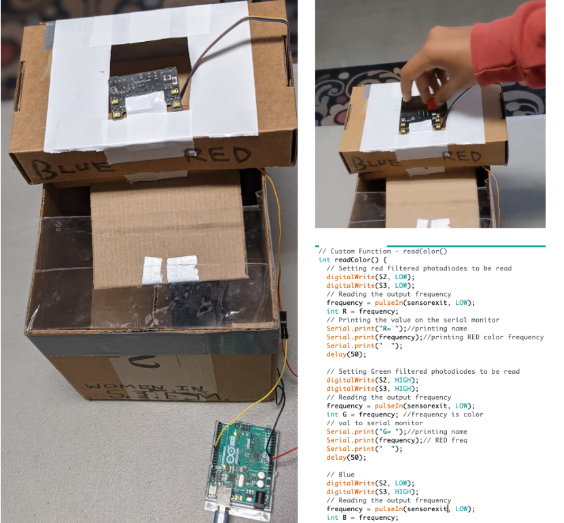

Entrepreneurship Project - Project Recycle (POE)
5/4/22 - 5/18/22
The 2022 Entrepreneurship Project is a major project done by all of the engineering and CS students at DHS. This year, I worked with Anwesha, Prathik, and Yougi to develop a trash can that automatically sorts trash using a variety of sensors, an arduino nano, and a servo arm. Since we could not acquire actual capacitive, inductive, or moisture sensors to detect plastic, we used a color sensor for our prototype to communicate the placement of the sensors and how the overall mechanism would work. I helped with the prototype, documentation, and presentation for this project. For documentation, I assisted Anwesha in writing a solution summary that provided an in depth description of our product. I focused on calculating the mechanical advantage of the simple machines and describing their significance in our solution. Once Prathik gathered data about the prototype, I used his findings to write a detailed analysis of our current iteration of the design. I also noted issues that were found while testing and identified possible causes and solutions that could be implemented if we had more time and resources. In POE class, I worked with Anwesha to gather materials and build a physical prototype with cardboard and tape. I focused on implementing simple machines to improve the product. This included an inclined plane to send trash down and a “wheel and axle” servo arm. I also helped with planning out our code and making the process efficient in terms of the soft-ware. During the project, we wrestled with the issue of communication. One of our group members did not even answer our messages or view the document until the last day, so the burden was placed on the other members. Moreover, we were unable to set deadlines properly and actually meet them, which led us to cram a lot of work into a few days. Although our prototype worked quite well, it could’ve been better if we had stuck to a solid plan and our gantt chart.